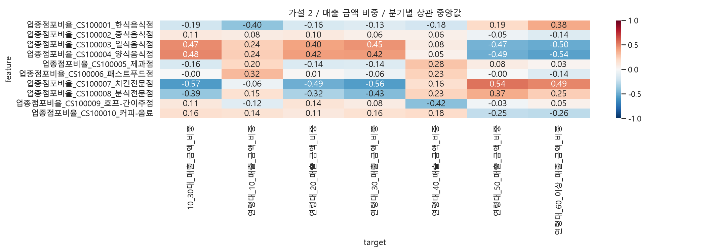
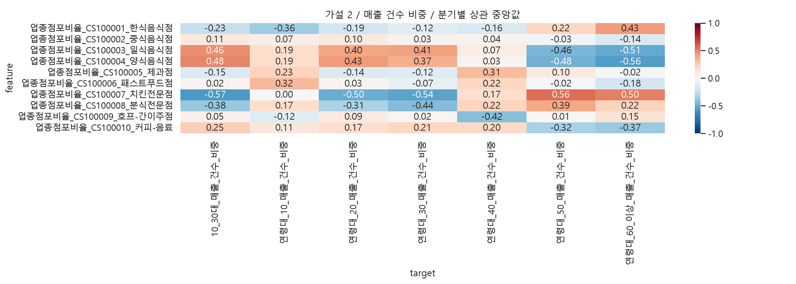

행정동·외식업 매출, 같은 분기의 지역 간 Spearman 탐색 분석입니다. 연령 확인 매출 합계를 분모로 금액·건수 비중을 각각 계산합니다. 건수는 고유 고객 수가 아닙니다. 비중은 합계 제약으로 서로 독립이 아니며 면적·상권규모·공간 의존성은 미통제입니다. 결측은 0으로 채우지 않고 쌍별 제외합니다. rho 중앙값은 통합 상관계수가 아닙니다. |중앙값|≥0.3, 방향 일치≥80%는 요약용 기준이지 통계적 가설 채택 기준이 아닙니다.
외식업 내부의 관측 점포 수 대비 각 외식업종 점포 비율. 누락 업종 행을 0으로 채우지 않습니다. 2025년 4분기만이 아니라 2025년 네 분기를 사용합니다. 비중의 공통 분모와 업종별 고객 구성 차이에 주의하세요.
| feature | target | median_rho | min_rho | max_rho | quarters | min_n | max_n | positive | negative | direction_consistency | exploratory_candidate |
|---|---|---|---|---|---|---|---|---|---|---|---|
| 업종점포비율_CS100007_치킨전문점 | 10_30대_매출_건수_비중 | -0.573761 | -0.578082 | -0.567377 | 4 | 424 | 424 | 0.0 | 1.0 | 1.0 | True |
| 업종점포비율_CS100004_양식음식점 | 연령대_60_이상_매출_건수_비중 | -0.560927 | -0.572388 | -0.545365 | 4 | 410 | 414 | 0.0 | 1.0 | 1.0 | True |
| 업종점포비율_CS100007_치킨전문점 | 연령대_50_매출_건수_비중 | 0.555168 | 0.539044 | 0.560784 | 4 | 424 | 424 | 1.0 | 0.0 | 1.0 | True |
| 업종점포비율_CS100007_치킨전문점 | 연령대_30_매출_건수_비중 | -0.536659 | -0.546205 | -0.517052 | 4 | 424 | 424 | 0.0 | 1.0 | 1.0 | True |
| 업종점포비율_CS100003_일식음식점 | 연령대_60_이상_매출_건수_비중 | -0.511790 | -0.523362 | -0.506377 | 4 | 405 | 408 | 0.0 | 1.0 | 1.0 | True |
| 업종점포비율_CS100007_치킨전문점 | 연령대_60_이상_매출_건수_비중 | 0.504309 | 0.498997 | 0.508173 | 4 | 424 | 424 | 1.0 | 0.0 | 1.0 | True |
| 업종점포비율_CS100007_치킨전문점 | 연령대_20_매출_건수_비중 | -0.495169 | -0.502297 | -0.488963 | 4 | 424 | 424 | 0.0 | 1.0 | 1.0 | True |
| 업종점포비율_CS100004_양식음식점 | 10_30대_매출_건수_비중 | 0.484512 | 0.463718 | 0.493454 | 4 | 410 | 414 | 1.0 | 0.0 | 1.0 | True |


| feature | target | median_rho | min_rho | max_rho | quarters | min_n | max_n | positive | negative | direction_consistency | exploratory_candidate |
|---|---|---|---|---|---|---|---|---|---|---|---|
| 업종점포비율_CS100007_치킨전문점 | 10_30대_매출_건수_비중 | -0.573761 | -0.578082 | -0.567377 | 4 | 424 | 424 | 0.00 | 1.00 | 1.00 | True |
| 업종점포비율_CS100007_치킨전문점 | 10_30대_매출_금액_비중 | -0.567920 | -0.574524 | -0.554605 | 4 | 424 | 424 | 0.00 | 1.00 | 1.00 | True |
| 업종점포비율_CS100004_양식음식점 | 연령대_60_이상_매출_건수_비중 | -0.560927 | -0.572388 | -0.545365 | 4 | 410 | 414 | 0.00 | 1.00 | 1.00 | True |
| 업종점포비율_CS100007_치킨전문점 | 연령대_30_매출_금액_비중 | -0.559664 | -0.570369 | -0.545069 | 4 | 424 | 424 | 0.00 | 1.00 | 1.00 | True |
| 업종점포비율_CS100007_치킨전문점 | 연령대_50_매출_건수_비중 | 0.555168 | 0.539044 | 0.560784 | 4 | 424 | 424 | 1.00 | 0.00 | 1.00 | True |
| 업종점포비율_CS100004_양식음식점 | 연령대_60_이상_매출_금액_비중 | -0.544418 | -0.551200 | -0.534231 | 4 | 410 | 414 | 0.00 | 1.00 | 1.00 | True |
| 업종점포비율_CS100007_치킨전문점 | 연령대_50_매출_금액_비중 | 0.540534 | 0.539405 | 0.569493 | 4 | 424 | 424 | 1.00 | 0.00 | 1.00 | True |
| 업종점포비율_CS100007_치킨전문점 | 연령대_30_매출_건수_비중 | -0.536659 | -0.546205 | -0.517052 | 4 | 424 | 424 | 0.00 | 1.00 | 1.00 | True |
| 업종점포비율_CS100003_일식음식점 | 연령대_60_이상_매출_건수_비중 | -0.511790 | -0.523362 | -0.506377 | 4 | 405 | 408 | 0.00 | 1.00 | 1.00 | True |
| 업종점포비율_CS100003_일식음식점 | 연령대_60_이상_매출_금액_비중 | -0.504907 | -0.516404 | -0.498763 | 4 | 405 | 408 | 0.00 | 1.00 | 1.00 | True |
| 업종점포비율_CS100007_치킨전문점 | 연령대_60_이상_매출_건수_비중 | 0.504309 | 0.498997 | 0.508173 | 4 | 424 | 424 | 1.00 | 0.00 | 1.00 | True |
| 업종점포비율_CS100007_치킨전문점 | 연령대_20_매출_건수_비중 | -0.495169 | -0.502297 | -0.488963 | 4 | 424 | 424 | 0.00 | 1.00 | 1.00 | True |
| 업종점포비율_CS100007_치킨전문점 | 연령대_20_매출_금액_비중 | -0.488256 | -0.497719 | -0.475178 | 4 | 424 | 424 | 0.00 | 1.00 | 1.00 | True |
| 업종점포비율_CS100007_치킨전문점 | 연령대_60_이상_매출_금액_비중 | 0.488093 | 0.478532 | 0.492180 | 4 | 424 | 424 | 1.00 | 0.00 | 1.00 | True |
| 업종점포비율_CS100004_양식음식점 | 연령대_50_매출_금액_비중 | -0.485014 | -0.491666 | -0.471142 | 4 | 410 | 414 | 0.00 | 1.00 | 1.00 | True |
| 업종점포비율_CS100004_양식음식점 | 10_30대_매출_금액_비중 | 0.484900 | 0.466434 | 0.495477 | 4 | 410 | 414 | 1.00 | 0.00 | 1.00 | True |
| 업종점포비율_CS100004_양식음식점 | 10_30대_매출_건수_비중 | 0.484512 | 0.463718 | 0.493454 | 4 | 410 | 414 | 1.00 | 0.00 | 1.00 | True |
| 업종점포비율_CS100004_양식음식점 | 연령대_50_매출_건수_비중 | -0.479297 | -0.488464 | -0.460191 | 4 | 410 | 414 | 0.00 | 1.00 | 1.00 | True |
| 업종점포비율_CS100003_일식음식점 | 연령대_50_매출_금액_비중 | -0.471416 | -0.480229 | -0.470061 | 4 | 405 | 408 | 0.00 | 1.00 | 1.00 | True |
| 업종점포비율_CS100003_일식음식점 | 10_30대_매출_금액_비중 | 0.470683 | 0.466360 | 0.472587 | 4 | 405 | 408 | 1.00 | 0.00 | 1.00 | True |
| 업종점포비율_CS100003_일식음식점 | 10_30대_매출_건수_비중 | 0.464333 | 0.457250 | 0.466606 | 4 | 405 | 408 | 1.00 | 0.00 | 1.00 | True |
| 업종점포비율_CS100003_일식음식점 | 연령대_50_매출_건수_비중 | -0.457598 | -0.459232 | -0.455378 | 4 | 405 | 408 | 0.00 | 1.00 | 1.00 | True |
| 업종점포비율_CS100003_일식음식점 | 연령대_30_매출_금액_비중 | 0.452010 | 0.448458 | 0.466023 | 4 | 405 | 408 | 1.00 | 0.00 | 1.00 | True |
| 업종점포비율_CS100008_분식전문점 | 연령대_30_매출_건수_비중 | -0.436748 | -0.442381 | -0.432246 | 4 | 425 | 425 | 0.00 | 1.00 | 1.00 | True |
| 업종점포비율_CS100008_분식전문점 | 연령대_30_매출_금액_비중 | -0.432800 | -0.437665 | -0.427922 | 4 | 425 | 425 | 0.00 | 1.00 | 1.00 | True |
| 업종점포비율_CS100001_한식음식점 | 연령대_60_이상_매출_건수_비중 | 0.427285 | 0.401420 | 0.435717 | 4 | 425 | 425 | 1.00 | 0.00 | 1.00 | True |
| 업종점포비율_CS100004_양식음식점 | 연령대_20_매출_건수_비중 | 0.425835 | 0.413473 | 0.441289 | 4 | 410 | 414 | 1.00 | 0.00 | 1.00 | True |
| 업종점포비율_CS100009_호프-간이주점 | 연령대_40_매출_건수_비중 | -0.423414 | -0.444781 | -0.419782 | 4 | 419 | 420 | 0.00 | 1.00 | 1.00 | True |
| 업종점포비율_CS100004_양식음식점 | 연령대_30_매출_금액_비중 | 0.422778 | 0.416658 | 0.443242 | 4 | 410 | 414 | 1.00 | 0.00 | 1.00 | True |
| 업종점포비율_CS100004_양식음식점 | 연령대_20_매출_금액_비중 | 0.419449 | 0.411370 | 0.433620 | 4 | 410 | 414 | 1.00 | 0.00 | 1.00 | True |
| 업종점포비율_CS100009_호프-간이주점 | 연령대_40_매출_금액_비중 | -0.415560 | -0.436447 | -0.384230 | 4 | 419 | 420 | 0.00 | 1.00 | 1.00 | True |
| 업종점포비율_CS100003_일식음식점 | 연령대_30_매출_건수_비중 | 0.407113 | 0.389395 | 0.414951 | 4 | 405 | 408 | 1.00 | 0.00 | 1.00 | True |
| 업종점포비율_CS100003_일식음식점 | 연령대_20_매출_금액_비중 | 0.399094 | 0.386200 | 0.413725 | 4 | 405 | 408 | 1.00 | 0.00 | 1.00 | True |
| 업종점포비율_CS100001_한식음식점 | 연령대_10_매출_금액_비중 | -0.398554 | -0.411396 | -0.372047 | 4 | 425 | 425 | 0.00 | 1.00 | 1.00 | True |
| 업종점포비율_CS100003_일식음식점 | 연령대_20_매출_건수_비중 | 0.395489 | 0.390217 | 0.403946 | 4 | 405 | 408 | 1.00 | 0.00 | 1.00 | True |
| 업종점포비율_CS100008_분식전문점 | 연령대_50_매출_건수_비중 | 0.389851 | 0.378357 | 0.415603 | 4 | 425 | 425 | 1.00 | 0.00 | 1.00 | True |
| 업종점포비율_CS100008_분식전문점 | 10_30대_매출_금액_비중 | -0.385378 | -0.389752 | -0.378360 | 4 | 425 | 425 | 0.00 | 1.00 | 1.00 | True |
| 업종점포비율_CS100001_한식음식점 | 연령대_60_이상_매출_금액_비중 | 0.379158 | 0.348005 | 0.383497 | 4 | 425 | 425 | 1.00 | 0.00 | 1.00 | True |
| 업종점포비율_CS100008_분식전문점 | 10_30대_매출_건수_비중 | -0.377334 | -0.379432 | -0.367262 | 4 | 425 | 425 | 0.00 | 1.00 | 1.00 | True |
| 업종점포비율_CS100008_분식전문점 | 연령대_50_매출_금액_비중 | 0.369509 | 0.361425 | 0.407091 | 4 | 425 | 425 | 1.00 | 0.00 | 1.00 | True |
| 업종점포비율_CS100010_커피-음료 | 연령대_60_이상_매출_건수_비중 | -0.367593 | -0.374847 | -0.348913 | 4 | 425 | 425 | 0.00 | 1.00 | 1.00 | True |
| 업종점포비율_CS100004_양식음식점 | 연령대_30_매출_건수_비중 | 0.367078 | 0.352841 | 0.386978 | 4 | 410 | 414 | 1.00 | 0.00 | 1.00 | True |
| 업종점포비율_CS100001_한식음식점 | 연령대_10_매출_건수_비중 | -0.356303 | -0.383917 | -0.340686 | 4 | 425 | 425 | 0.00 | 1.00 | 1.00 | True |
| 업종점포비율_CS100010_커피-음료 | 연령대_50_매출_건수_비중 | -0.322649 | -0.337153 | -0.277774 | 4 | 425 | 425 | 0.00 | 1.00 | 1.00 | True |
| 업종점포비율_CS100006_패스트푸드점 | 연령대_10_매출_금액_비중 | 0.322327 | 0.291171 | 0.340452 | 4 | 420 | 421 | 1.00 | 0.00 | 1.00 | True |
| 업종점포비율_CS100006_패스트푸드점 | 연령대_10_매출_건수_비중 | 0.320629 | 0.299625 | 0.344631 | 4 | 420 | 421 | 1.00 | 0.00 | 1.00 | True |
| 업종점포비율_CS100008_분식전문점 | 연령대_20_매출_금액_비중 | -0.315546 | -0.323068 | -0.304668 | 4 | 425 | 425 | 0.00 | 1.00 | 1.00 | True |
| 업종점포비율_CS100005_제과점 | 연령대_40_매출_건수_비중 | 0.314647 | 0.299463 | 0.316292 | 4 | 421 | 423 | 1.00 | 0.00 | 1.00 | True |
| 업종점포비율_CS100008_분식전문점 | 연령대_20_매출_건수_비중 | -0.312636 | -0.317962 | -0.289033 | 4 | 425 | 425 | 0.00 | 1.00 | 1.00 | True |
| 업종점포비율_CS100005_제과점 | 연령대_40_매출_금액_비중 | 0.284004 | 0.272407 | 0.292455 | 4 | 421 | 423 | 1.00 | 0.00 | 1.00 | False |
| 업종점포비율_CS100010_커피-음료 | 연령대_60_이상_매출_금액_비중 | -0.263647 | -0.272549 | -0.249763 | 4 | 425 | 425 | 0.00 | 1.00 | 1.00 | False |
| 업종점포비율_CS100008_분식전문점 | 연령대_60_이상_매출_금액_비중 | 0.249594 | 0.236715 | 0.254952 | 4 | 425 | 425 | 1.00 | 0.00 | 1.00 | False |
| 업종점포비율_CS100010_커피-음료 | 연령대_50_매출_금액_비중 | -0.247892 | -0.272648 | -0.189387 | 4 | 425 | 425 | 0.00 | 1.00 | 1.00 | False |
| 업종점포비율_CS100010_커피-음료 | 10_30대_매출_건수_비중 | 0.245919 | 0.225588 | 0.257281 | 4 | 425 | 425 | 1.00 | 0.00 | 1.00 | False |
| 업종점포비율_CS100004_양식음식점 | 연령대_10_매출_금액_비중 | 0.243503 | 0.207296 | 0.277186 | 4 | 410 | 414 | 1.00 | 0.00 | 1.00 | False |
| 업종점포비율_CS100003_일식음식점 | 연령대_10_매출_금액_비중 | 0.235940 | 0.220375 | 0.255024 | 4 | 405 | 408 | 1.00 | 0.00 | 1.00 | False |
| 업종점포비율_CS100001_한식음식점 | 10_30대_매출_건수_비중 | -0.233401 | -0.253282 | -0.212890 | 4 | 425 | 425 | 0.00 | 1.00 | 1.00 | False |
| 업종점포비율_CS100006_패스트푸드점 | 연령대_40_매출_금액_비중 | 0.231665 | 0.219891 | 0.242497 | 4 | 420 | 421 | 1.00 | 0.00 | 1.00 | False |
| 업종점포비율_CS100005_제과점 | 연령대_10_매출_건수_비중 | 0.227892 | 0.169361 | 0.267744 | 4 | 421 | 423 | 1.00 | 0.00 | 1.00 | False |
| 업종점포비율_CS100008_분식전문점 | 연령대_40_매출_금액_비중 | 0.225972 | 0.219537 | 0.233576 | 4 | 425 | 425 | 1.00 | 0.00 | 1.00 | False |
| 업종점포비율_CS100008_분식전문점 | 연령대_60_이상_매출_건수_비중 | 0.224141 | 0.221552 | 0.231825 | 4 | 425 | 425 | 1.00 | 0.00 | 1.00 | False |
| 업종점포비율_CS100008_분식전문점 | 연령대_40_매출_건수_비중 | 0.220994 | 0.214223 | 0.226855 | 4 | 425 | 425 | 1.00 | 0.00 | 1.00 | False |
| 업종점포비율_CS100001_한식음식점 | 연령대_50_매출_건수_비중 | 0.218117 | 0.206542 | 0.242395 | 4 | 425 | 425 | 1.00 | 0.00 | 1.00 | False |
| 업종점포비율_CS100006_패스트푸드점 | 연령대_40_매출_건수_비중 | 0.218116 | 0.187064 | 0.228192 | 4 | 420 | 421 | 1.00 | 0.00 | 1.00 | False |
| 업종점포비율_CS100010_커피-음료 | 연령대_30_매출_건수_비중 | 0.214059 | 0.184996 | 0.229011 | 4 | 425 | 425 | 1.00 | 0.00 | 1.00 | False |
| 업종점포비율_CS100005_제과점 | 연령대_10_매출_금액_비중 | 0.204434 | 0.152476 | 0.254378 | 4 | 421 | 423 | 1.00 | 0.00 | 1.00 | False |
| 업종점포비율_CS100010_커피-음료 | 연령대_40_매출_건수_비중 | 0.198841 | 0.167346 | 0.236968 | 4 | 425 | 425 | 1.00 | 0.00 | 1.00 | False |
| 업종점포비율_CS100001_한식음식점 | 연령대_20_매출_건수_비중 | -0.194341 | -0.203096 | -0.170339 | 4 | 425 | 425 | 0.00 | 1.00 | 1.00 | False |
| 업종점포비율_CS100001_한식음식점 | 10_30대_매출_금액_비중 | -0.190661 | -0.214209 | -0.161188 | 4 | 425 | 425 | 0.00 | 1.00 | 1.00 | False |
| 업종점포비율_CS100001_한식음식점 | 연령대_50_매출_금액_비중 | 0.189234 | 0.180042 | 0.227662 | 4 | 425 | 425 | 1.00 | 0.00 | 1.00 | False |
| 업종점포비율_CS100004_양식음식점 | 연령대_10_매출_건수_비중 | 0.187042 | 0.147072 | 0.232133 | 4 | 410 | 414 | 1.00 | 0.00 | 1.00 | False |
| 업종점포비율_CS100003_일식음식점 | 연령대_10_매출_건수_비중 | 0.185969 | 0.158099 | 0.191099 | 4 | 405 | 408 | 1.00 | 0.00 | 1.00 | False |
| 업종점포비율_CS100001_한식음식점 | 연령대_40_매출_금액_비중 | -0.184104 | -0.230755 | -0.165010 | 4 | 425 | 425 | 0.00 | 1.00 | 1.00 | False |
| 업종점포비율_CS100010_커피-음료 | 연령대_40_매출_금액_비중 | 0.182594 | 0.165926 | 0.227409 | 4 | 425 | 425 | 1.00 | 0.00 | 1.00 | False |
| 업종점포비율_CS100006_패스트푸드점 | 연령대_60_이상_매출_건수_비중 | -0.180713 | -0.191331 | -0.161327 | 4 | 420 | 421 | 0.00 | 1.00 | 1.00 | False |
| 업종점포비율_CS100008_분식전문점 | 연령대_10_매출_건수_비중 | 0.173338 | 0.122848 | 0.205372 | 4 | 425 | 425 | 1.00 | 0.00 | 1.00 | False |
| 업종점포비율_CS100010_커피-음료 | 연령대_20_매출_건수_비중 | 0.169027 | 0.166882 | 0.179755 | 4 | 425 | 425 | 1.00 | 0.00 | 1.00 | False |
| 업종점포비율_CS100007_치킨전문점 | 연령대_40_매출_건수_비중 | 0.167180 | 0.143921 | 0.197896 | 4 | 424 | 424 | 1.00 | 0.00 | 1.00 | False |
| 업종점포비율_CS100001_한식음식점 | 연령대_40_매출_건수_비중 | -0.163097 | -0.208908 | -0.150252 | 4 | 425 | 425 | 0.00 | 1.00 | 1.00 | False |
| 업종점포비율_CS100007_치킨전문점 | 연령대_40_매출_금액_비중 | 0.161983 | 0.146632 | 0.183595 | 4 | 424 | 424 | 1.00 | 0.00 | 1.00 | False |
| 업종점포비율_CS100010_커피-음료 | 10_30대_매출_금액_비중 | 0.160614 | 0.140821 | 0.177946 | 4 | 425 | 425 | 1.00 | 0.00 | 1.00 | False |
| 업종점포비율_CS100005_제과점 | 10_30대_매출_금액_비중 | -0.159240 | -0.169780 | -0.152094 | 4 | 421 | 423 | 0.00 | 1.00 | 1.00 | False |
| 업종점포비율_CS100001_한식음식점 | 연령대_20_매출_금액_비중 | -0.157772 | -0.165460 | -0.116632 | 4 | 425 | 425 | 0.00 | 1.00 | 1.00 | False |
| 업종점포비율_CS100010_커피-음료 | 연령대_30_매출_금액_비중 | 0.156095 | 0.116753 | 0.159632 | 4 | 425 | 425 | 1.00 | 0.00 | 1.00 | False |
| 업종점포비율_CS100008_분식전문점 | 연령대_10_매출_금액_비중 | 0.153756 | 0.101538 | 0.168485 | 4 | 425 | 425 | 1.00 | 0.00 | 1.00 | False |
| 업종점포비율_CS100009_호프-간이주점 | 연령대_60_이상_매출_건수_비중 | 0.146381 | 0.128066 | 0.155500 | 4 | 419 | 420 | 1.00 | 0.00 | 1.00 | False |
| 업종점포비율_CS100005_제과점 | 10_30대_매출_건수_비중 | -0.145736 | -0.155251 | -0.135214 | 4 | 421 | 423 | 0.00 | 1.00 | 1.00 | False |
| 업종점포비율_CS100005_제과점 | 연령대_20_매출_금액_비중 | -0.144379 | -0.176512 | -0.133464 | 4 | 421 | 423 | 0.00 | 1.00 | 1.00 | False |
| 업종점포비율_CS100005_제과점 | 연령대_20_매출_건수_비중 | -0.144038 | -0.163822 | -0.132404 | 4 | 421 | 423 | 0.00 | 1.00 | 1.00 | False |
| 업종점포비율_CS100002_중식음식점 | 연령대_60_이상_매출_건수_비중 | -0.143526 | -0.154625 | -0.136401 | 4 | 418 | 419 | 0.00 | 1.00 | 1.00 | False |
| 업종점포비율_CS100010_커피-음료 | 연령대_10_매출_금액_비중 | 0.142317 | 0.116651 | 0.174332 | 4 | 425 | 425 | 1.00 | 0.00 | 1.00 | False |
| 업종점포비율_CS100005_제과점 | 연령대_30_매출_금액_비중 | -0.138660 | -0.170030 | -0.131639 | 4 | 421 | 423 | 0.00 | 1.00 | 1.00 | False |
| 업종점포비율_CS100002_중식음식점 | 연령대_60_이상_매출_금액_비중 | -0.138567 | -0.150603 | -0.110031 | 4 | 418 | 419 | 0.00 | 1.00 | 1.00 | False |
| 업종점포비율_CS100009_호프-간이주점 | 연령대_20_매출_금액_비중 | 0.136501 | 0.124647 | 0.149998 | 4 | 419 | 420 | 1.00 | 0.00 | 1.00 | False |
| 업종점포비율_CS100006_패스트푸드점 | 연령대_60_이상_매출_금액_비중 | -0.135989 | -0.155435 | -0.118669 | 4 | 420 | 421 | 0.00 | 1.00 | 1.00 | False |
| 업종점포비율_CS100001_한식음식점 | 연령대_30_매출_금액_비중 | -0.125250 | -0.141645 | -0.105458 | 4 | 425 | 425 | 0.00 | 1.00 | 1.00 | False |
| 업종점포비율_CS100005_제과점 | 연령대_30_매출_건수_비중 | -0.123248 | -0.144804 | -0.109283 | 4 | 421 | 423 | 0.00 | 1.00 | 1.00 | False |
| 업종점포비율_CS100009_호프-간이주점 | 연령대_10_매출_금액_비중 | -0.123116 | -0.147007 | -0.079277 | 4 | 419 | 420 | 0.00 | 1.00 | 1.00 | False |
| 업종점포비율_CS100009_호프-간이주점 | 연령대_10_매출_건수_비중 | -0.119678 | -0.132322 | -0.092893 | 4 | 419 | 420 | 0.00 | 1.00 | 1.00 | False |
| 업종점포비율_CS100001_한식음식점 | 연령대_30_매출_건수_비중 | -0.116226 | -0.122501 | -0.094300 | 4 | 425 | 425 | 0.00 | 1.00 | 1.00 | False |
| 업종점포비율_CS100010_커피-음료 | 연령대_10_매출_건수_비중 | 0.112906 | 0.087830 | 0.124448 | 4 | 425 | 425 | 1.00 | 0.00 | 1.00 | False |
| 업종점포비율_CS100009_호프-간이주점 | 10_30대_매출_금액_비중 | 0.110971 | 0.100919 | 0.141715 | 4 | 419 | 420 | 1.00 | 0.00 | 1.00 | False |
| 업종점포비율_CS100010_커피-음료 | 연령대_20_매출_금액_비중 | 0.108368 | 0.095792 | 0.117889 | 4 | 425 | 425 | 1.00 | 0.00 | 1.00 | False |
| 업종점포비율_CS100002_중식음식점 | 10_30대_매출_금액_비중 | 0.106738 | 0.089176 | 0.118122 | 4 | 418 | 419 | 1.00 | 0.00 | 1.00 | False |
| 업종점포비율_CS100002_중식음식점 | 10_30대_매출_건수_비중 | 0.105880 | 0.098393 | 0.110854 | 4 | 418 | 419 | 1.00 | 0.00 | 1.00 | False |
| 업종점포비율_CS100002_중식음식점 | 연령대_20_매출_금액_비중 | 0.100518 | 0.075339 | 0.111495 | 4 | 418 | 419 | 1.00 | 0.00 | 1.00 | False |
| 업종점포비율_CS100005_제과점 | 연령대_50_매출_건수_비중 | 0.098533 | 0.083269 | 0.108154 | 4 | 421 | 423 | 1.00 | 0.00 | 1.00 | False |
| 업종점포비율_CS100002_중식음식점 | 연령대_20_매출_건수_비중 | 0.095751 | 0.094283 | 0.103687 | 4 | 418 | 419 | 1.00 | 0.00 | 1.00 | False |
| 업종점포비율_CS100009_호프-간이주점 | 연령대_20_매출_건수_비중 | 0.091439 | 0.079274 | 0.102452 | 4 | 419 | 420 | 1.00 | 0.00 | 1.00 | False |
| 업종점포비율_CS100002_중식음식점 | 연령대_10_매출_금액_비중 | 0.084671 | 0.073522 | 0.098846 | 4 | 418 | 419 | 1.00 | 0.00 | 1.00 | False |
| 업종점포비율_CS100003_일식음식점 | 연령대_40_매출_금액_비중 | 0.084564 | 0.057681 | 0.118573 | 4 | 405 | 408 | 1.00 | 0.00 | 1.00 | False |
| 업종점포비율_CS100009_호프-간이주점 | 연령대_30_매출_금액_비중 | 0.082806 | 0.065880 | 0.125478 | 4 | 419 | 420 | 1.00 | 0.00 | 1.00 | False |
| 업종점포비율_CS100005_제과점 | 연령대_50_매출_금액_비중 | 0.080936 | 0.058551 | 0.115346 | 4 | 421 | 423 | 1.00 | 0.00 | 1.00 | False |
| 업종점포비율_CS100003_일식음식점 | 연령대_40_매출_건수_비중 | 0.074413 | 0.061184 | 0.113552 | 4 | 405 | 408 | 1.00 | 0.00 | 1.00 | False |
| 업종점포비율_CS100006_패스트푸드점 | 연령대_30_매출_건수_비중 | -0.071244 | -0.076786 | -0.065105 | 4 | 420 | 421 | 0.00 | 1.00 | 1.00 | False |
| 업종점포비율_CS100002_중식음식점 | 연령대_10_매출_건수_비중 | 0.065682 | 0.057703 | 0.078334 | 4 | 418 | 419 | 1.00 | 0.00 | 1.00 | False |
| 업종점포비율_CS100002_중식음식점 | 연령대_40_매출_금액_비중 | 0.062123 | 0.034116 | 0.088619 | 4 | 418 | 419 | 1.00 | 0.00 | 1.00 | False |
| 업종점포비율_CS100006_패스트푸드점 | 연령대_30_매출_금액_비중 | -0.060696 | -0.063753 | -0.051286 | 4 | 420 | 421 | 0.00 | 1.00 | 1.00 | False |
| 업종점포비율_CS100007_치킨전문점 | 연령대_10_매출_금액_비중 | -0.059781 | -0.094760 | -0.028316 | 4 | 424 | 424 | 0.00 | 1.00 | 1.00 | False |
| 업종점포비율_CS100002_중식음식점 | 연령대_30_매출_금액_비중 | 0.058200 | 0.043205 | 0.061618 | 4 | 418 | 419 | 1.00 | 0.00 | 1.00 | False |
| 업종점포비율_CS100009_호프-간이주점 | 연령대_60_이상_매출_금액_비중 | 0.051237 | 0.027478 | 0.064087 | 4 | 419 | 420 | 1.00 | 0.00 | 1.00 | False |
| 업종점포비율_CS100004_양식음식점 | 연령대_40_매출_금액_비중 | 0.049631 | 0.034372 | 0.066281 | 4 | 410 | 414 | 1.00 | 0.00 | 1.00 | False |
| 업종점포비율_CS100002_중식음식점 | 연령대_50_매출_금액_비중 | -0.049528 | -0.055590 | -0.025722 | 4 | 418 | 419 | 0.00 | 1.00 | 1.00 | False |
| 업종점포비율_CS100009_호프-간이주점 | 10_30대_매출_건수_비중 | 0.048659 | 0.041994 | 0.078167 | 4 | 419 | 420 | 1.00 | 0.00 | 1.00 | False |
| 업종점포비율_CS100002_중식음식점 | 연령대_40_매출_건수_비중 | 0.035173 | 0.008994 | 0.056960 | 4 | 418 | 419 | 1.00 | 0.00 | 1.00 | False |
| 업종점포비율_CS100002_중식음식점 | 연령대_30_매출_건수_비중 | 0.033749 | 0.026801 | 0.042919 | 4 | 418 | 419 | 1.00 | 0.00 | 1.00 | False |
| 업종점포비율_CS100002_중식음식점 | 연령대_50_매출_건수_비중 | -0.033302 | -0.064180 | -0.026571 | 4 | 418 | 419 | 0.00 | 1.00 | 1.00 | False |
| 업종점포비율_CS100009_호프-간이주점 | 연령대_50_매출_금액_비중 | -0.031731 | -0.088450 | -0.023964 | 4 | 419 | 420 | 0.00 | 1.00 | 1.00 | False |
| 업종점포비율_CS100005_제과점 | 연령대_60_이상_매출_금액_비중 | 0.028607 | 0.020724 | 0.041914 | 4 | 421 | 423 | 1.00 | 0.00 | 1.00 | False |
| 업종점포비율_CS100004_양식음식점 | 연령대_40_매출_건수_비중 | 0.027433 | 0.014414 | 0.043013 | 4 | 410 | 414 | 1.00 | 0.00 | 1.00 | False |
| 업종점포비율_CS100006_패스트푸드점 | 연령대_20_매출_건수_비중 | 0.025103 | 0.003134 | 0.028518 | 4 | 420 | 421 | 1.00 | 0.00 | 1.00 | False |
| 업종점포비율_CS100006_패스트푸드점 | 10_30대_매출_건수_비중 | 0.023638 | 0.011697 | 0.035801 | 4 | 420 | 421 | 1.00 | 0.00 | 1.00 | False |
| 업종점포비율_CS100006_패스트푸드점 | 연령대_50_매출_건수_비중 | -0.022462 | -0.029705 | -0.008900 | 4 | 420 | 421 | 0.00 | 1.00 | 1.00 | False |
| 업종점포비율_CS100005_제과점 | 연령대_60_이상_매출_건수_비중 | -0.020187 | -0.029862 | 0.007662 | 4 | 421 | 423 | 0.25 | 0.75 | 0.75 | False |
| 업종점포비율_CS100009_호프-간이주점 | 연령대_30_매출_건수_비중 | 0.019762 | 0.007154 | 0.061613 | 4 | 419 | 420 | 1.00 | 0.00 | 1.00 | False |
| 업종점포비율_CS100009_호프-간이주점 | 연령대_50_매출_건수_비중 | 0.014554 | -0.036052 | 0.023890 | 4 | 419 | 420 | 0.75 | 0.25 | 0.75 | False |
| 업종점포비율_CS100006_패스트푸드점 | 연령대_20_매출_금액_비중 | 0.008335 | -0.026610 | 0.015381 | 4 | 420 | 421 | 0.75 | 0.25 | 0.75 | False |
| 업종점포비율_CS100007_치킨전문점 | 연령대_10_매출_건수_비중 | 0.004688 | -0.028156 | 0.051801 | 4 | 424 | 424 | 0.50 | 0.50 | 0.50 | False |
| 업종점포비율_CS100006_패스트푸드점 | 연령대_50_매출_금액_비중 | -0.001914 | -0.012859 | 0.006706 | 4 | 420 | 421 | 0.50 | 0.50 | 0.50 | False |
| 업종점포비율_CS100006_패스트푸드점 | 10_30대_매출_금액_비중 | -0.000445 | -0.016601 | 0.008269 | 4 | 420 | 421 | 0.50 | 0.50 | 0.50 | False |